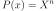
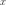
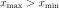

MonomialFunction¶
-
class
MonomialFunction(*args)¶ Monomial function class.
- Available constructors:
- MonomialFunction(degree)
Parameters: degre : int
Degree of the monomial function
Notes
The monomial function defines as :

Examples
Create a standard absolute exponential covariance function:
>>> import openturns as ot >>> P = ot.MonomialFunction(3)
Methods
__call__(…) <==> x(…)draw(xMin, xMax, pointNumber)Draw the function. getClassName()Accessor to the object’s name. getId()Accessor to the object’s id. getName()Accessor to the object’s name. getShadowedId()Accessor to the object’s shadowed id. getVisibility()Accessor to the object’s visibility state. gradient(x)Compute the gradient at point . hasName()Test if the object is named. hasVisibleName()Test if the object has a distinguishable name. hessian(x)Compute the hessian at point . setName(name)Accessor to the object’s name. setShadowedId(id)Accessor to the object’s shadowed id. setVisibility(visible)Accessor to the object’s visibility state. -
__init__(*args)¶ x.__init__(…) initializes x; see help(type(x)) for signature
-
draw(xMin, xMax, pointNumber)¶ Draw the function.
Parameters: x_min : float, optional
The starting value that is used for meshing the x-axis.
x_max : float, optional, 
The ending value that is used for meshing the x-axis.
n_points : int, optional
The number of points that is used for meshing the x-axis.
Examples
>>> import openturns as ot >>> from openturns.viewer import View >>> f = ot.UniVariatePolynomial([1.0, 2.0, -3.0, 5.0]) >>> View(f.draw(-10.0, 10.0, 100)).show()
-
getClassName()¶ Accessor to the object’s name.
Returns: class_name : str
The object class name (object.__class__.__name__).
-
getId()¶ Accessor to the object’s id.
Returns: id : int
Internal unique identifier.
-
getName()¶ Accessor to the object’s name.
Returns: name : str
The name of the object.
-
getShadowedId()¶ Accessor to the object’s shadowed id.
Returns: id : int
Internal unique identifier.
-
getVisibility()¶ Accessor to the object’s visibility state.
Returns: visible : bool
Visibility flag.
-
gradient(x)¶ Compute the gradient at point .
Returns: gradient : float
The value of the monomial’s first-order derivative at point .
Examples
>>> import openturns as ot >>> P = ot.MonomialFunction(3) >>> print(P.gradient(1.0)) 3.0
-
hasName()¶ Test if the object is named.
Returns: hasName : bool
True if the name is not empty.
-
hasVisibleName()¶ Test if the object has a distinguishable name.
Returns: hasVisibleName : bool
True if the name is not empty and not the default one.
-
hessian(x)¶ Compute the hessian at point .
Parameters: x : float
Input value.
Returns: hessian : float
The value of the monomial’s second-order derivative at point .
Examples
>>> import openturns as ot >>> P = ot.MonomialFunction(3) >>> print(P.hessian(1.0)) 6.0
-
setName(name)¶ Accessor to the object’s name.
Parameters: name : str
The name of the object.
-
setShadowedId(id)¶ Accessor to the object’s shadowed id.
Parameters: id : int
Internal unique identifier.
-
setVisibility(visible)¶ Accessor to the object’s visibility state.
Parameters: visible : bool
Visibility flag.